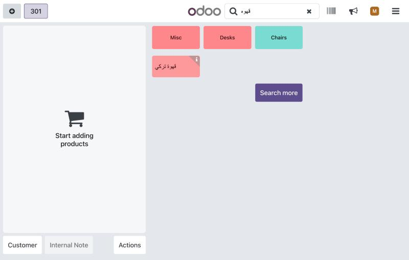

Find products and customers in the Point of Sale however the cashier types Arabic.
ابحث بالعربي زي ما تكتب
The same Arabic word is typed in many ways. A cashier types احمد and Odoo does not find the customer أحمد. They type قهوه and the product قهوة is not found. A phone number typed with Arabic digits finds nothing.
| Typed | Finds | Rule |
|---|---|---|
| احمد / إحمد | أحمد | All forms of alef: أ إ آ ٱ = ا |
| قهوه | قهوة | Taa marbuta: ة = ه |
| مستشفي | مستشفى | Alef maqsura and yaa: ى = ي, ئ = ي |
| موسسة | مؤسسة | Waw with hamza: ؤ = و |
| محمد | مُحَمَّد / مـحـمـد | Tashkeel and tatweel are ignored |
| ٠١٠٠١٢٣ | 01001234567 | Arabic and Persian digits = 0–9 |
It also matches Persian keyboard letters (ک ی) with their Arabic look-alikes. English search is unchanged.
Searching قهوه with haa finds the product قهوة تركي:

Nothing to configure: install the app and reopen the Point of Sale. It works on the product search and on the customer list, offline too, and the search box keeps exactly what the cashier typed.
Questions or problems: contact me through the Odoo Apps store and I will answer within two working days.